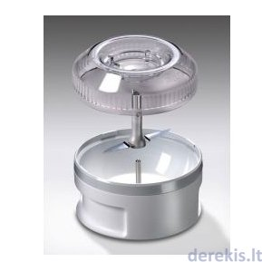

Welcome to Blenderiai
Mikseriai / blenderiai | imperija.lt
2020.10.29 12:20Mūsų svetainėje naudojami slapukai, kad užtikrintume jums teikiamų paslaugų kokybę. Išjungdami šį pranešimą arba toliau naršydami šioje svetainėje sutinkate su imperija.lt slapukų naudojimo politika . Supratau
Orkaitės
Kaitlentės
Gartraukiai
Šaldytuvai, šaldikliai
Mikrobangų krosnelės, dekoratyvinės durelės mikrobangėms
Įmontuojami kavos aparatai, aksesuarai
Indaplovės
Skalbyklės
Viryklės
Indų pašildymo stalčiai
Plautuvės, vandens maišytuvai
Virtuviniai kombainai
Mikseriai / blenderiai
Elektriniai virduliai
Skrudintuvai
Kavos virimo aparatai, kavamalės
Elektriniai keptuvai / griliai
Elektrinės sulčiaspaudės
Elektriniai daugiafunkciniai puodai
Kiti prietaisai
Puodai, troškintuvai
Keptuvės
Dangčiai
Kepimo indai, formos, skardos ir aksesuarai konditerijai
Virduliai
Vakuuminiai indai
Indai biriems maisto produktams
Termosai
Stalo įrankiai
Vaikiškų stalo indų, įrankių rinkiniai
Lėkštės, indų servizai, dubenys, salotinės, padažinės
Puodeliai, stiklinės, taurės, gertuvės
Indeliai užkandžiams
Ąsočiai, ąsotėliai, grafinai
Tortinės, vaisinės, padėklai
Sviestinės
Arbatinukai, kavinukai
Servizai kavai, arbatai
Druskinės, pipirinės, cukrinės
Fondiu indai
Indai gėrimų atšaldymui
Vazos, žvakidės
Virtuvės įrankiai
Peiliai, peilių laikikliai, galąstuvai
Pjaustymo lentelės, duoninės, popierinių rankšluosčių laikikliai
Tarkos, pjaustyklės, smulkintuvai ir virtuvinės žirklės
Makaronų mašinėlės ir jų priedai, įrankiai miltinių gaminių ruošimui
Rankinės mėsmalės ir jų priedai
Skustukai, gremžtukai, kauliukų išėmėjai
Malūnėliai, grūstuvės, prieskonių ir aliejaus indai
Sulčiaspaudės, spaustuvai, trintuvės
Koštuvai, sieteliai
Konservų ir butelių atidarytuvai
Termometrai, laikmačiai, svarstyklės
Griliaus įrankiai
Įvairūs virtuviniai aksesuarai
Valymo priemonės, valikliai
Valymo įrankiai, šluostės
Muilinės
Kvepalai namams
Kvepiančios žvakės
Buitinė technika
Orkaitės
Kaitlentės
Gartraukiai
Šaldytuvai, šaldikliai
Mikrobangų krosnelės, dekoratyvinės durelės mikrobangėms
Įmontuojami kavos aparatai, aksesuarai
Indaplovės
Skalbyklės
Viryklės
Indų pašildymo stalčiai
Plautuvės, vandens maišytuvai
Smulki buitinė technika
Virtuviniai kombainai
Mikseriai / blenderiai
Elektriniai virduliai
Skrudintuvai
Kavos virimo aparatai, kavamalės
Elektriniai keptuvai / griliai
Elektrinės sulčiaspaudės
Elektriniai daugiafunkciniai puodai
Kiti prietaisai
Virtuvės indai
Puodai, troškintuvai
Keptuvės
Dangčiai
Kepimo indai, formos, skardos ir aksesuarai konditerijai
Virduliai
Vakuuminiai indai
Indai biriems maisto produktams
Termosai
Stalo indai, stalo įrankiai
Stalo įrankiai
Vaikiškų stalo indų, įrankių rinkiniai
Lėkštės, indų servizai, dubenys, salotinės, padažinės
Puodeliai, stiklinės, taurės, gertuvės
Indeliai užkandžiams
Ąsočiai, ąsotėliai, grafinai
Tortinės, vaisinės, padėklai
Sviestinės
Arbatinukai, kavinukai
Servizai kavai, arbatai
Druskinės, pipirinės, cukrinės
Fondiu indai
Indai gėrimų atšaldymui
Vazos, žvakidės
Virtuvės įrankiai ir aksesuarai
Virtuvės įrankiai
Peiliai, peilių laikikliai, galąstuvai
Pjaustymo lentelės, duoninės, popierinių rankšluosčių laikikliai
Tarkos, pjaustyklės, smulkintuvai ir virtuvinės žirklės
Makaronų mašinėlės ir jų priedai, įrankiai miltinių gaminių ruošimui
Rankinės mėsmalės ir jų priedai
Skustukai, gremžtukai, kauliukų išėmėjai
Malūnėliai, grūstuvės, prieskonių ir aliejaus indai
Sulčiaspaudės, spaustuvai, trintuvės
Koštuvai, sieteliai
Konservų ir butelių atidarytuvai
Termometrai, laikmačiai, svarstyklės
Griliaus įrankiai
Įvairūs virtuviniai aksesuarai
Švaros prekės
Valymo priemonės, valikliai
Valymo įrankiai, šluostės
Muilinės
Kvepalai namams
Kvepiančios žvakės
Gamintojai
Mūsų parduotuvės Kaip pirkti? Prisijungti arba registruotis Krepšelis 0 Turite klausimų? +370 700 88770 Pradžia Smulki buitinė technikaMikseriai / blenderiai
iki -50% Nuolaidų fiesta!
Akcija galioja iki 2020 11 03
Filtrai Populiariausios viršuje Pigiausios viršuje Naujausios viršuje 24 48 visos prekės Tipas
Blenderiai 36 Smulkintuvai, kokteilinės 22 Priedai bamix blenderiams 11 Plaktuvai (mikseriai) 8Kaina
Spec. pasiūlymai
Akcija 59 Naujiena 8Gamintojas
SMEG 23 Bamix 25 Russell Hobbs 26 LACOR 5Galingumas
125 W 1 140 W 3 160 W 3 200 W 11 300 W 2 350 W 3 400 W 3 500 W 7 600 W 1 650 W 2 700 W 13 750 W 1 800 W 10 1000 W 1Pristatymas
1-2 d.d. 52 3-5 d.d. 3 1-4 sav. 24 Populiariausia prekė-20%
Blenderis bamix® SwissLine M200 € 159,99 € 199,99 Galingumas: 200 W € 159,99 € 199,99 Į krepšelį Populiariausia prekė
-20%
bamix® blenderis „M200 OLIVERANTHRACITE“ € 135,20 € 169,00 Galingumas: 200 W € 135,20 € 169,00 Į krepšelį Populiariausia prekė
-30%
Blenderis bamix® „M200 BAKING BLACK € 230,30 € 329,00 Galingumas: 200 W € 230,30 € 329,00 Į krepšelį -35%
LACOR blenderis su stikline 61676 € 25,09 € 38,60 Galingumas: 400 W € 25,09 € 38,60 Į krepšelį -30%
Blenderis bamix® „M200 BAKING WHITE € 230,30 € 329,00 Galingumas: 200 W € 230,30 € 329,00 Į krepšelį -20%
Blenderis bamix® Mono M140 € 111,99 € 139,99 € 111,99 € 139,99 Į krepšelį -20%
Blenderis bamix® SwissLine M200 SILVER € 183,99 € 229,99 Galingumas: 200 W € 183,99 € 229,99 Į krepšelį -20%
Blenderis bamix® SwissLine M200 RED € 183,99 € 229,99 Galingumas: 200 W € 183,99 € 229,99 Į krepšelį -20%
LACOR blenderis su pjaustykle 61671 € 45,56 € 56,95 Galingumas: 700 W € 45,56 € 56,95 Į krepšelį -20%
bamix® blenderis „M200 Deluxe BBQ“ € 183,20 € 229,00 Galingumas: 200 W € 183,20 € 229,00 Į krepšelį -20%
LACOR kokteilinė MIX & GO € 26,36 € 32,95 € 26,36 € 32,95 Į krepšelį Naujiena
-20%
Blenderis bamix® M160 One , red € 127,20 € 159,00 € 127,20 € 159,00 Į krepšelį Naujiena
-20%
Blenderis bamix® M160 One , white € 119,20 € 149,00 € 119,20 € 149,00 Į krepšelį Naujiena
-20%
Blenderis bamix® M160 One , black € 127,20 € 159,00 € 127,20 € 159,00 Į krepšelį Naujiena
-20%
bamix® blenderis EO200CLASSIC , black € 191,20 € 239,00 Galingumas: 200 W € 191,20 € 239,00 Į krepšelį -15%
Russell Hobbs kokteilinė Velocity Jug 25710-56 € 57,79 € 67,99 Galingumas: 750 W € 57,79 € 67,99 Į krepšelį -15%
Russell Hobbs Retro kokteilinė Jug Blender 25190-56 € 61,36 € 72,19 Galingumas: 800 W € 61,36 € 72,19 Į krepšelį -15%
LACOR blenderis su stikline 61681 € 43,31 € 50,95 Galingumas: 700 W € 43,31 € 50,95 Į krepšelį -10%
Russell Hobbs rankinis mikseris Explore 22230-56 € 16,91 € 18,79 € 16,91 € 18,79 Į krepšelį -10%
Russell Hobbs rankinis blenderis Explore 22240-56 € 18,89 € 20,99 Galingumas: 200 W € 18,89 € 20,99 Į krepšelį -10%
Russell Hobbs rankinis mikseris Horizon 24671-56 € 26,63 € 29,59 € 26,63 € 29,59 Į krepšelį -10%
Russell Hobbs rankinis mikseris Desire 24670-56 € 26,09 € 28,99 € 26,09 € 28,99 Į krepšelį -10%
Russell Hobbs rankinis blenderis Desire 24690-56 € 26,09 € 28,99 € 26,09 € 28,99 Į krepšelį -10%
Russell Hobbs smulkintuvas Desire Mini 24660-56 € 26,09 € 28,99 Galingumas: 200 W € 26,09 € 28,99 Į krepšelį Ankstesnis puslapis | 1 | 2 | 3 | 4 | Sekantis puslapis
Blenderiai arba kitaip smulkintuvai - daugelio šeimininkių namuose yra vienas svarbiausių prietaisų, kuris padeda ne tik mėgautis skaniausiais patiekalais, bet ir pagaminti juos lengvai ir greitai. Blenderis tapo pagrindiniu pagalbininku virtuvėje ir itin svarbiu, ruošiant šviežius patiekalus. Prietaiso pagalba vos per kelias minutes susmulkinsite ir sumaišysite įvairias uogas ar vaisius ir galėsite mėgautis vitaminingais jų kokteiliais, kurie šiuo metu yra labai populiarūs. Taip pat greitai ir paprastai galima susmulkinti skirtingas daržoves, paruošti įvairius įdarus, užtepėles, trintas sriubas ar maistą kūdikiams. Galiausiai, prietaiso pagalba išsuksite kiaušinius ar paruošite tešlą, norint iškepti sausainius bei pyragus.
Ieškodami tinkamiausio blenderio būtinai įvertinkite, kokius maisto produktus planuojate smulkinti . Dažnai blenderiai skirstomi pagal tai, kokių produktų smulkinimui jie bus naudojami. Jei vieni jų puikiai tinka tik minkštiems produktams, pvz. uogoms, virtoms daržovėms smulkinti, tai kiti gali sėkmingai sukapoti ledo kubelius ar sumalti kavos pupeles, riešutus bei kitus kietus produktus.
Nuo šiol nebėra ribų, varžančių jūsų kūrybiškumą ir laisvę eksperimentuoti virtuvėje.
Prekių pristatymas
Pristatymas per 1-2 d. d.
Skaityti daugiau
Prekių grąžinimas
Grąžinimas per 14 dienų
Skaityti daugiau
Saugus pirkimas
100% saugus pirkimas
Skaityti daugiau
Kaip pirkti?
Greita, saugu ir paprasta
Skaityti daugiau
Pas mus galite atsiskaityti
Grynais Bankiniu pavedimuKatalogas
Buitinė technika
Smulki buitinė technika
Virtuvės indai
Stalo indai, stalo įrankiai
Virtuvės įrankiai ir aksesuarai
Švaros prekės
Informacija
Apie mus
Kaip pirkti?
Prekių pristatymas
Prekių grąžinimas
Saugus pirkimas
Privatumo politika
Mūsų parduotuvės
Lojalumo programa
Kontaktai
Sekite mus
Visos naujienos gyvai Imperija.lt © 2020 IMPERIJA